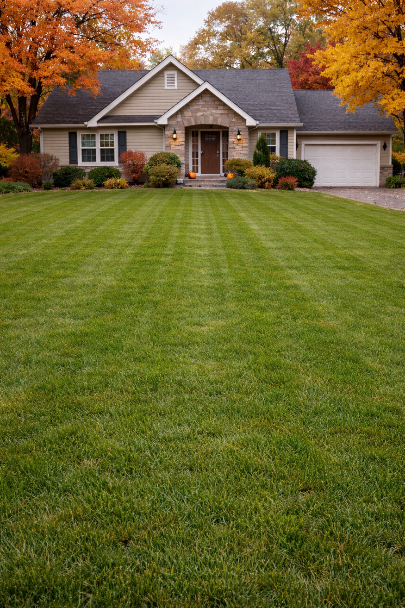
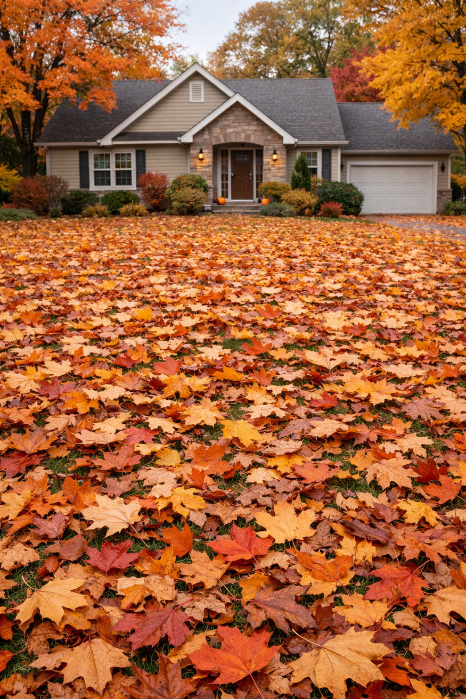

Startseite / Herbstpflege
Herbstpflege
Havelland
Das Laub fällt – wir räumen es weg. Laubentfernung, Dachrinnenreinigung und alles für einen gepflegten Garten im Herbst. Jetzt Termin sichern!
Das Laub fällt – wir räumen es weg. Laubentfernung, Dachrinnenreinigung und alles für einen gepflegten Garten im Herbst. Jetzt Termin sichern!

Der Herbst bringt bunte Blätter – aber auch jede Menge Arbeit. Laub auf Wegen, Rasen und Beeten, verstopfte Dachrinnen, und ein Garten der für den Winter vorbereitet werden muss.
Ich übernehme das für Sie – mit professionellem Equipment schnell und gründlich erledigt, damit Sie die schöne Jahreszeit genießen können.
Die Herbstsaison ist schnell ausgebucht. Frühzeitig anfragen sichert Ihren Wunschtermin.


Laub auf Wegen, Rasen, Beeten und Terrassen wird vollständig beseitigt – auch bei großen Grundstücken.


Verstopfte Dachrinnen können zu ernsthaften Schäden führen. Ich reinige sie gründlich und prüfe den freien Abfluss.


Damit Ihr Garten gut durch den Winter kommt – alles was im Herbst getan werden muss.
Viele unterschätzen, wie wichtig die Herbstpflege für Garten und Haus ist. Wer jetzt nicht handelt, hat im Frühjahr oft deutlich mehr Arbeit – oder Schäden.
Jetzt Termin sichernKönnen bei Regen zu Wasserschäden an Fassade und Fundament führen.
Eine dicke Laubschicht nimmt dem Rasen Licht und Luft – im Frühjahr entstehen kahle Stellen.
Nasses Laub auf Wegen und Einfahrten ist eine ernsthafte Rutschgefahr.
Wer im Herbst alles richtig macht, startet im Frühjahr mit einem gut vorbereiteten Garten.
Garten – Falkensee
Einfamilienhaus – Brieselang
Garten – Kladow
Jetzt Termin sichern – die Saison ist schnell ausgebucht